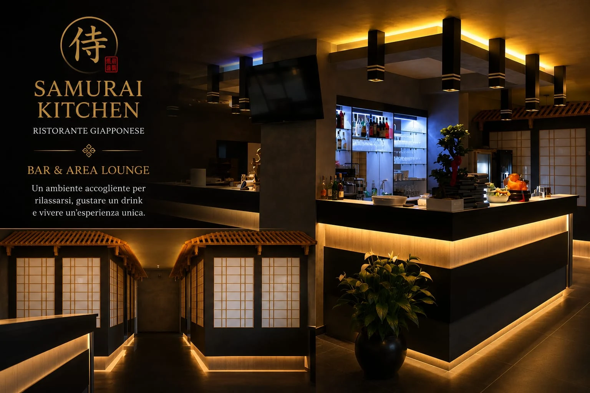
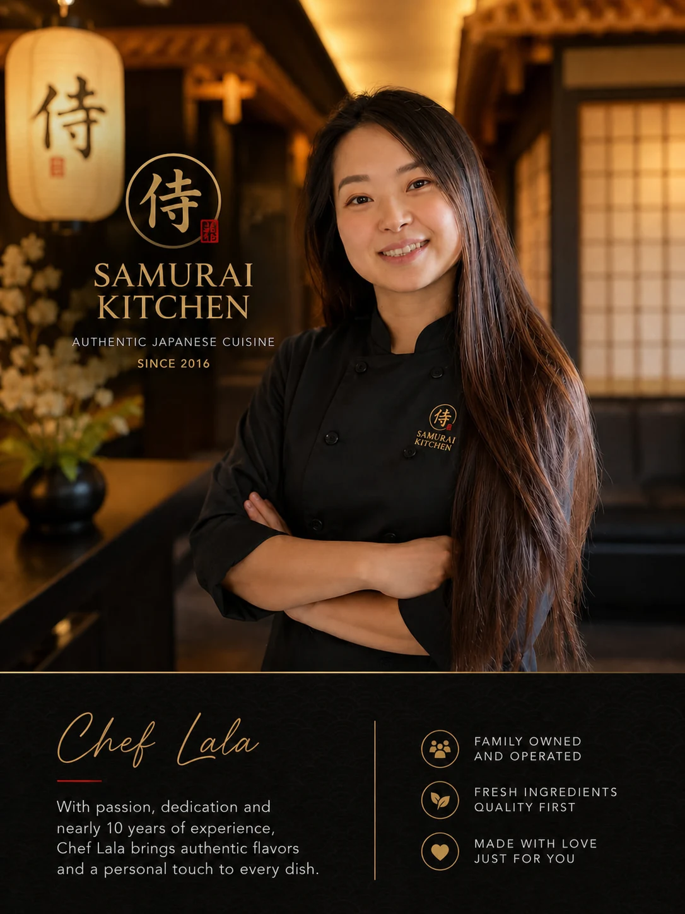

AVIANO · DAL 2016
Benvenuti da Samurai.
Cucina giapponese e cinese, preparata con cura e servita con calore.
Scopri il menuIL NOSTRO MENU
Trova subito ciò che ami.
Tocca una categoria. Ogni piatto mantiene il numero originale per ordinare facilmente.
A CASA TUA
Preferisci la consegna?
Ordina direttamente dal servizio che preferisci.
IL RISTORANTE
Un angolo accogliente ad Aviano.


CHEF E FONDATRICE
Incontra Chef Lala.
Mi chiamo Lala e nel 2016 ho aperto Samurai Kitchen con un sogno semplice: creare un luogo dove le persone potessero sentirsi a casa davanti a un buon pasto. Da allora ho avuto il privilegio di accogliere famiglie italiane, personale della Base Aerea di Aviano e ospiti provenienti da tutto il mondo. Grazie per aver scelto il mio ristorante. Spero di rivedervi presto.
Con affetto, Lala
RESTA IN CONTATTO
Parla con noi.
Scrivici direttamente oppure seguici su Facebook per novità e aggiornamenti.